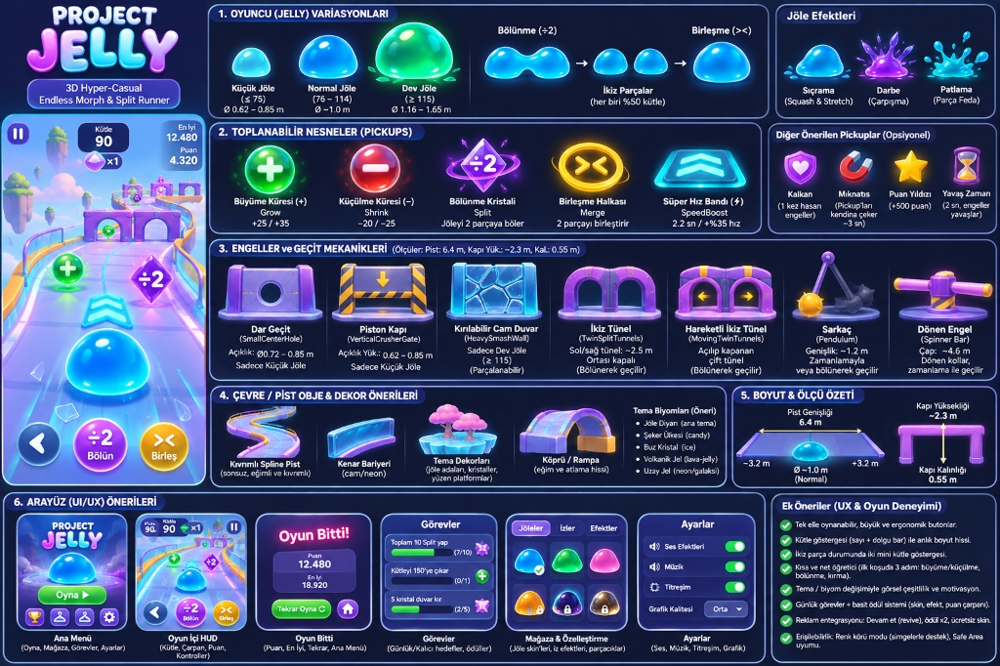
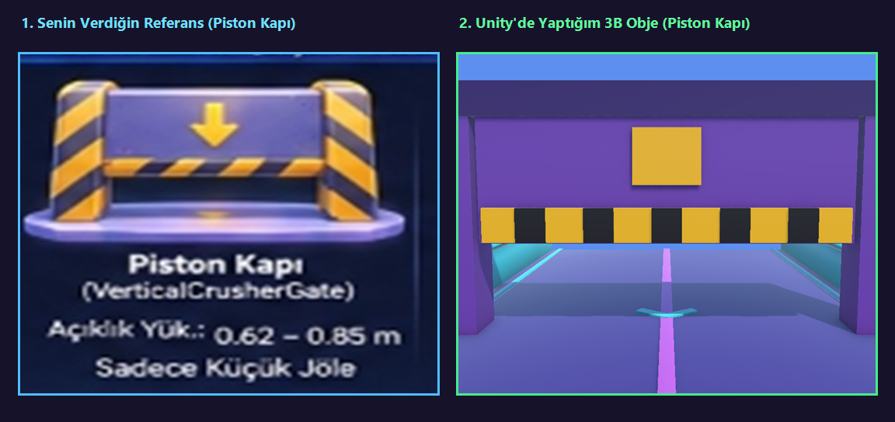
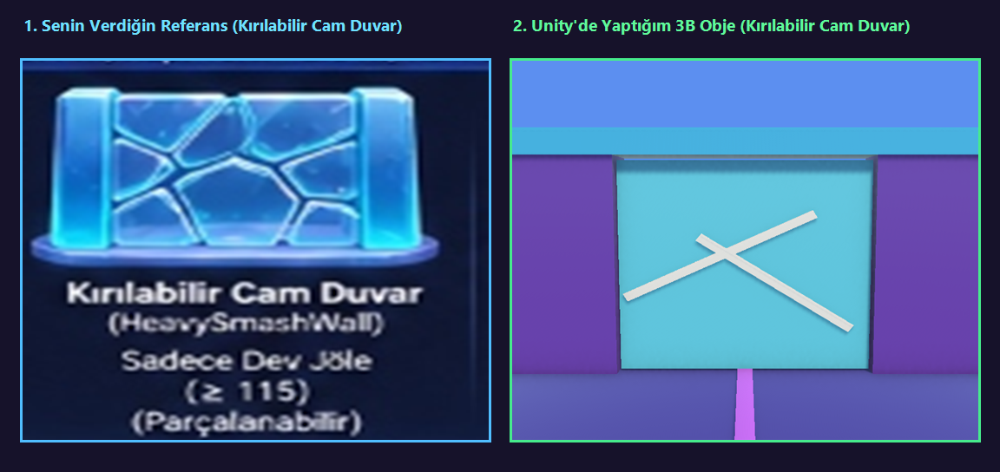
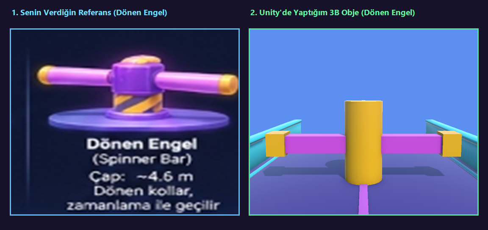
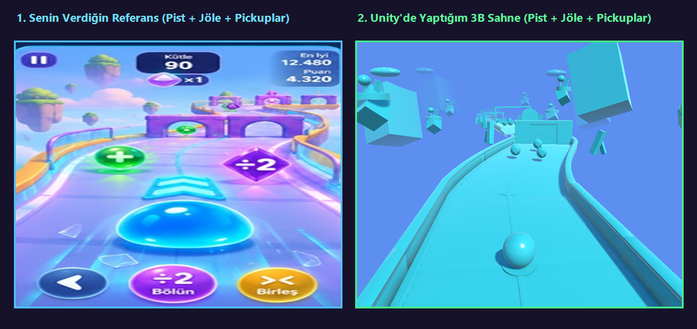

Project Jelly — Master Game Design Specification Sheet
Referans dokümanında tanımlanan tüm varyasyonlar, engeller, nesneler ve arayüzler Unity 3D motorunda birebir kodlandı.
Referans Görsel vs. Unity 3B Üretim Karşılaştırması

Piston Kapı (Vertical Crusher Gate)
Sarı-siyah ikaz şeritleri, aşağı yön oku (↓) ve dikey hidrolik ezici mekanizma ile sadece küçük jölelerin altından sığabileceği dikey engel.

Kırılabilir Cam Duvar (Heavy Smash Wall)
Önceden çatlak hatlarına sahip yarı saydam kristal duvar. Sadece kütlesi ≥ 115 olan Dev Jöle ile darbe anında 16 parçaya bölünerek parçalanır.

Dönen Engel (Spinner Bar — Çap: ~4.6m)
Merkezi kaide etrafında 360° dönen neon kollara sahip bariyer. Zamanlamayla aralardan veya bölünerek iki yandan kaçış gerektirir.

Kıvrımlı Spline Pist + Jöle + Pickuplar + Parallaks
Pürüzsüz spline matematik şeritleri, cam yan bariyerler, yüzen gökyüzü adaları ve toplanabilir güçlendirme küreleriyle canlı sahne.
Temel Oyun Mekanikleri & Özellikler
Dinamik Morfoloji
Küçük Jöle (Ø0.62–0.85m), Normal Jöle (Ø~1.0m) ve Dev Jöle (Ø1.16–1.65m) arasında kütleye bağlı yumuşak hacim geçişi.
Bölünme (÷2) & Birleşme
Tüneller ve ikiye ayrılan köprülerde jöle iki bağımsız kütleye ayrılır; engel sonrası otomatik veya manuel (><) birleşir.
9 Farklı Pickup
Grow (+), Shrink (-), Split (÷2), Merge (><), SpeedBoost (⚡), Kalkan (🛡), Mıknatıs (🧲), Yıldız (+500⭐), Yavaş Zaman (⏳).
5 Dinamik Biyom
Jöle Diyarı Şeker Ülkesi Buz Kristal Volkanik Jel Uzay Jel
8 Pist Mimarisi
İkiz köprü uçurumu, rampalı uçuşlar, 2. kat kırılabilir cam viyadük, lazer dilimleyiciler, kaygan yüzeyler ve çarpan finali.
6 Tam Ekran UI
Ana Menü, Oyun İçi HUD, Görevler, Seviye Sonu Çarpanı, 3 Sekmeli Mağaza (Skin/İz/Efekt) ve Ayarlar ekranları.
Hasar & Kalkan Sistemi
Kalkan aktifken darbeleri absorbe eder; kalkan yoksa engellere çarpıldığında kütle kaybedilir veya bir parça feda edilir.
x2 - x10 Final Puanı
Her seviyenin sonunda kalan kütleye göre cam duvarları kırarak x2, x3, x5 ve x10 çarpanlarına ulaşma ödülü.